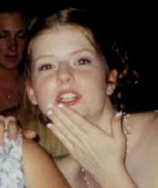

Here she is...in her Junior Prom picture...ah, that was a great night, I think, I wasn't at that prom. She was my best friend in high school, she's so amazing and I just love any time I get to spend time with her. We foil each other perfectly, it seems, sometimes. She's not the female Nick, at all, she's something quite unique. I really miss her so much sometimes, but I'm thankful that I had a chance to be her friend.

Here she is at our Senior prom. That was the most memorable night in high school. It's too bad we could only have one, because I would love to live those nights over again, but sometimes it's important to move on to better things.
Now-a-days, April and I are still pals. She's still running around with that miracle of a guy Matt. She calls me up sometime, bitching about classes, or work, or whatever. It seems in the last three years, we have grown so far apart, but I don't ask why she doesn't call me, I'm just going to wait for it. While she goes on to experience life and love, so do I, and though we may no longer be as close and treasured to eachother as we once were, we are still a part of eachother...and there are things about eachother that only we understand, and I'm going to hold onto that as long as I can. I love April, and I hope to be a close and treasured friend of hers until the end of time...
Now-a-days, April and I are still pals. She's still running around with that miracle of a guy Matt. She calls me up sometime, bitching about classes, or work, or whatever. It seems in the last three years, we have grown so far apart, but I don't ask why she doesn't call me, I'm just going to wait for it. While she goes on to experience life and love, so do I, and though we may no longer be as close and treasured to eachother as we once were, we are still a part of eachother...and there are things about eachother that only we understand, and I'm going to hold onto that as long as I can. I love April, and I hope to be a close and treasured friend of hers until the end of time...

I'll always hold a special place for you in my heart...maybe next to my liver, or somewhere important...I picked this song because it goes with that whole peaches and posies/piss and vinegar thing we have between each other...maybe she'll see what I mean...
Confidence
You're confident
So confident
You're full of it
You're full of shit
But you see...
You're confident
So confident
You're full of it
You're full of shit
But you see...
The world is full of girls like you
The world is full of girls like you
The world is full of girls like you
The world is full of sluts like you
So you see...
We'll believe it
When we see it
We'll believe it
When we see it...